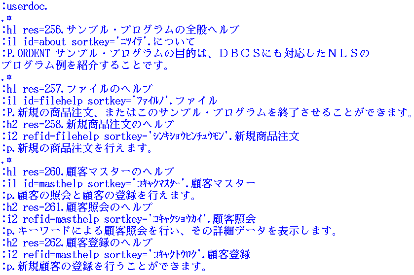

┌──────────────────────────────────────────────────────────────────────┐ │IPF symbols are used for including box-line characters into help text.│ └──────────────────────────────────────────────────────────────────────┘
Sometimes you may want to include box-line characters such as ╣ and ╦ in a help text. If you input those characters directly from an editor on English OS/2 and see them on DBCS OS/2, those characters may be replaced with other characters, because the box-line characters defined on the English code page are different from those defined on the DBCS code pages.
OS/2 IPF (Information Presentation Facility) symbols should be utilized for inclusion of box-line characters in order to:
Since this method may make the programmer feel inconvenient, a new feature
is provided by Programming Tools V2.1. There is a code page attribute for
:font. tag. If you use this attribute with a header tag, that section
will be presented with the code page used at the time of creation of the
source file, regardless of the code page used at runtime. Thus, if you use
the box-line characters in the source file, just specify this attribute
as the code page you are using to create the source file. The code pages
850 and 437 can be specified as the attribute.(**)
Using IPF symbols to show box-line characters (source: ORDRENG.IPF)
:userdoc. &ellips. :h1 res=270. Keys Help :p.The following short-cut keys are available from the main window : :dl. :dt.Keys :dd.Descrption :dt.&bxh.&bxh.&bxh.&bxh.&bxh.&bxh. :dd.&bxh.&bxh.&bxh.&bxh.&bxh.&bxh.&bxh.&bxh.&bxh.&bxh.&bxh.&bxh.&bxh.&bxh.&bxh.&bxh.&bxh.&bxh.&bxh.&bxh.&bxh.&bxh. :dt.CTL+N :dd.Push CTL+N in the main dialog to create a new order. This is same action as "New Order" on the File pull-down. :dt.CTL+Q :dd.Push CTL+Q in the main dialog to inquiry customers by a keyword. This is same action as "Inquire Customers" on the Master pull-down. :dt.CTL+R :dd.Push CTL+R in the main dialog to register a customer by a keyword. This is same action as "Register a customer" on the Master pull-down. :dt.CTL+P :dd.Push CTL+P in the main dialog to print out an order list report by products during specified period. :dt.&bxh.&bxh.&bxh.&bxh.&bxh.&bxh. :dd.&bxh.&bxh.&bxh.&bxh.&bxh.&bxh.&bxh.&bxh.&bxh.&bxh.&bxh.&bxh.&bxh.&bxh.&bxh.&bxh.&bxh.&bxh.&bxh.&bxh.&bxh.&bxh. :edl. &ellips.
┌──────────────────────────────────────────────────────────────────────┐ │Use a DBCS version of OS/2 IPF compiler to accept SORTKEY, which is a │ │DBCS-unique command of DBCS-support IPF. │ └──────────────────────────────────────────────────────────────────────┘
DBCS-support IPF has DBCS-unique provision, SORTKEY, to sort help items in a DBCS country-unique order. The SORTKEY in a Japanese text (ORDRJPN.IPF) shows a usage of this IPF command. A word in a literal following SORTKEY is read by an IPF compiler to sort help items written in DBCS. Since literacy to a language is mandatory to define help texts, a translator normally adds this command to the help texts.
You should use each country version of IPF compiler to compile help texts
after the translation to an Asian language is done, because an SBCS-version
of IPF compiler does not accept SORTKEY.
SORTKEY in a Japanese text (ORDRJPN.IPF)
